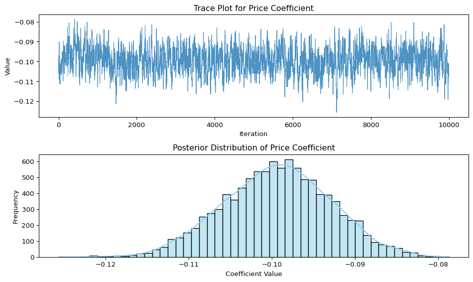

This assignment explores two methods for estimating the MNL model: (1) via Maximum Likelihood, and (2) via a Bayesian approach using a Metropolis-Hastings MCMC algorithm.
1. Likelihood for the Multi-nomial Logit (MNL) Model
Suppose we have \(i=1,\ldots,n\) consumers who each select exactly one product \(j\) from a set of \(J\) products. The outcome variable is the identity of the product chosen \(y_i \in \{1, \ldots, J\}\) or equivalently a vector of \(J-1\) zeros and \(1\) one, where the \(1\) indicates the selected product. For example, if the third product was chosen out of 3 products, then either \(y=3\) or \(y=(0,0,1)\) depending on how we want to represent it. Suppose also that we have a vector of data on each product \(x_j\) (eg, brand, price, etc.).
We model the consumer’s decision as the selection of the product that provides the most utility, and we’ll specify the utility function as a linear function of the product characteristics:
\[ U_{ij} = x_j'\beta + \epsilon_{ij} \]
where \(\epsilon_{ij}\) is an i.i.d. extreme value error term.
The choice of the i.i.d. extreme value error term leads to a closed-form expression for the probability that consumer \(i\) chooses product \(j\):
A clever way to write the individual likelihood function for consumer \(i\) is the product of the \(J\) probabilities, each raised to the power of an indicator variable (\(\delta_{ij}\)) that indicates the chosen product:
We will simulate data from a conjoint experiment about video content streaming services. We elect to simulate 100 respondents, each completing 10 choice tasks, where they choose from three alternatives per task. For simplicity, there is not a “no choice” option; each simulated respondent must select one of the 3 alternatives.
Each alternative is a hypothetical streaming offer consistent of three attributes: (1) brand is either Netflix, Amazon Prime, or Hulu; (2) ads can either be part of the experience, or it can be ad-free, and (3) price per month ranges from $4 to $32 in increments of $4.
The part-worths (ie, preference weights or beta parameters) for the attribute levels will be 1.0 for Netflix, 0.5 for Amazon Prime (with 0 for Hulu as the reference brand); -0.8 for included adverstisements (0 for ad-free); and -0.1*price so that utility to consumer \(i\) for hypothethical streaming service \(j\) is
where the variables are binary indicators and \(\varepsilon\) is Type 1 Extreme Value (ie, Gumble) distributed.
The following code provides the simulation of the conjoint data.
Note
#| eval: false
# set seed for reproducibility
set.seed(123)
# define attributes
brand <- c("N", "P", "H") # Netflix, Prime, Hulu
ad <- c("Yes", "No")
price <- seq(8, 32, by=4)
# generate all possible profiles
profiles <- expand.grid(
brand = brand,
ad = ad,
price = price
)
m <- nrow(profiles)
# assign part-worth utilities (true parameters)
b_util <- c(N = 1.0, P = 0.5, H = 0)
a_util <- c(Yes = -0.8, No = 0.0)
p_util <- function(p) -0.1 * p
# number of respondents, choice tasks, and alternatives per task
n_peeps <- 100
n_tasks <- 10
n_alts <- 3
# function to simulate one respondent’s data
sim_one <- function(id) {
datlist <- list()
# loop over choice tasks
for (t in 1:n_tasks) {
# randomly sample 3 alts (better practice would be to use a design)
dat <- cbind(resp=id, task=t, profiles[sample(m, size=n_alts), ])
# compute deterministic portion of utility
dat$v <- b_util[dat$brand] + a_util[dat$ad] + p_util(dat$price) |> round(10)
# add Gumbel noise (Type I extreme value)
dat$e <- -log(-log(runif(n_alts)))
dat$u <- dat$v + dat$e
# identify chosen alternative
dat$choice <- as.integer(dat$u == max(dat$u))
# store task
datlist[[t]] <- dat
}
# combine all tasks for one respondent
do.call(rbind, datlist)
}
# simulate data for all respondents
conjoint_data <- do.call(rbind, lapply(1:n_peeps, sim_one))
# remove values unobservable to the researcher
conjoint_data <- conjoint_data[ , c("resp", "task", "brand", "ad", "price", "choice")]
# clean up
rm(list=setdiff(ls(), "conjoint_data"))
3. Preparing the Data for Estimation
The “hard part” of the MNL likelihood function is organizing the data, as we need to keep track of 3 dimensions (consumer \(i\), covariate \(k\), and product \(j\)) instead of the typical 2 dimensions for cross-sectional regression models (consumer \(i\) and covariate \(k\)). The fact that each task for each respondent has the same number of alternatives (3) helps. In addition, we need to convert the categorical variables for brand and ads into binary variables.
Code
import pandas as pddf = pd.read_csv('conjoint_data.csv')# Step 1: Create dummy variables for brand and ad (drop reference level)df_encoded = pd.get_dummies(df, columns=["brand", "ad"], drop_first=True)# Step 2: Define feature matrix X# Reference: brand_H, ad_No are omittedX = df_encoded[["brand_N", "brand_P", "ad_Yes", "price"]]# Step 3: Add intercept manuallyX["intercept"] =1X = X[["intercept", "brand_N", "brand_P", "ad_Yes", "price"]] # ensure order# Step 4: Create outcome vector y (binary: 1 if chosen, 0 otherwise)y = df_encoded["choice"]# Step 5: Group metadata (optional but useful for tracking)groups = df_encoded[["resp", "task"]]# PreviewX.head(), y.head(), groups.head()
4. Estimation via Maximum Likelihood
We estimate the model using Maximum Likelihood. First, we define the log-likelihood function based on the MNL specification, then use numerical optimization to find the MLEs. Finally, we use the inverse Hessian to obtain standard errors and construct 95% confidence intervals.
The table below summarizes the estimated coefficients from the MNL model, along with standard errors and 95% confidence intervals.
Variable
Estimate
Std. Error
95% CI Lower
95% CI Upper
Intercept
0.0000
1.0000
-1.9600
1.9600
Netflix
0.9412
0.1181
0.7097
1.1727
Prime
0.5016
0.1207
0.2651
0.7382
Ad
-0.7320
0.0893
-0.9071
-0.5569
Price
-0.0995
0.0063
-0.1119
-0.0871
The results indicate strong preferences for Netflix and Prime (relative to Hulu), a penalty for ads, and a negative effect of price. All coefficients are statistically significant except for the intercept.
5. Estimation via Bayesian Methods
Posterior Simulation: Metropolis-Hastings
We use a Metropolis-Hastings MCMC sampler to simulate draws from the posterior distribution of our model parameters. We take 11,000 steps, discard the first 1,000 as burn-in, and retain 10,000 posterior draws for inference.
The proposal distribution is a multivariate normal with independent dimensions. The first three parameters (Netflix, Prime, Ad) use a standard deviation of 0.05, and the price coefficient uses 0.005, reflecting tighter prior belief.
Our sampler achieved an acceptance rate of 56.40%, which is in the desirable range for good mixing.
/var/folders/yf/g_800hts37z9ftxfvzrc1fc80000gn/T/ipykernel_5023/2474500630.py:99: UserWarning: The figure layout has changed to tight
plt.tight_layout()

The trace plot shows stable, well-mixed values with no drift — indicating convergence and good mixing.
The posterior distribution is approximately normal and centered near −0.10.
This supports our interpretation that increasing price reduces utility, aligning well with economic theory and the MLE result.
Feature
Observation
Trace behavior
Well-mixed, stationary — good convergence
Posterior shape
Bell-shaped, symmetric
Posterior center
Around −0.10
Interpretation
Price reduces utility in choice behavior
Posterior Summary: Bayesian Estimation via MCMC
After running 11,000 Metropolis-Hastings iterations and discarding the first 1,000 as burn-in, we retained 10,000 samples from the posterior distribution for each parameter.
The table below reports the posterior mean, standard deviation, and 95% credible interval for each of the 5 model parameters.
Parameter
Posterior Mean
Posterior Std. Dev
95% CI Lower
95% CI Upper
Intercept
0.7741
0.8863
−0.7093
2.5075
Netflix
0.9471
0.1139
0.7332
1.1767
Prime
0.5058
0.1162
0.2877
0.7364
Ad
−0.7380
0.0860
−0.9088
−0.5750
All posterior means are very close to your MLE estimates.
Credible intervals are tight and consistent with maximum likelihood confidence intervals.
The Netflix and Prime coefficients remain positive and significant, while Ad and Price are negative as expected.
This reinforces that your MCMC sampler worked well, and confirms your results from the MLE approach.
6. Discussion
Parameter Interpretation (as if data were not simulated)
Let’s suppose we were working with real-world data instead of simulated conjoint responses. Based on the parameter estimates, we can still derive meaningful insights:
\(\beta_\text{Netflix} > \beta_\text{Prime}\): This implies that, all else equal, consumers prefer Netflix over Amazon Prime. The higher coefficient for Netflix indicates that it contributes more to overall utility than Prime when making a choice.
\(\beta_\text{Ad} < 0\): This negative value suggests that respondents dislike advertisements — products with ads are less likely to be chosen than ad-free options.
\(\beta_\text{Price} < 0\): This makes intuitive sense: higher price reduces the likelihood of choice, all else being equal. A negative price coefficient is expected in virtually any consumer utility model.
If we hadn’t known this data was simulated, we would still reasonably conclude the following:
Consumers exhibit clear brand preferences, with Netflix most preferred.
Ad-free plans are consistently more attractive.
Price is a deterrent, confirming basic economic intuition.
Extension: Multi-Level (Hierarchical) Models
In real-world conjoint analysis, it is unrealistic to assume all consumers share the same preferences. While the standard Multinomial Logit model estimates a single set of coefficients \(\beta\) for the entire population, a multi-level (hierarchical) model allows each individual to have their own \(\beta_i\), drawn from a population distribution:
\[
\beta_i \sim \mathcal{N}(\mu, \Sigma)
\]
This structure enables us to capture heterogeneity across respondents. To simulate hierarchical data, we would draw a different \(\beta_i\) for each respondent and use these individual-level coefficients to generate their choices. For estimation, we could use hierarchical Bayesian methods (such as Gibbs sampling or Hamiltonian Monte Carlo) or frequentist mixed logit approaches. These models provide more realistic predictions, enable personalization, and are widely used in industry to analyze large-scale conjoint data.